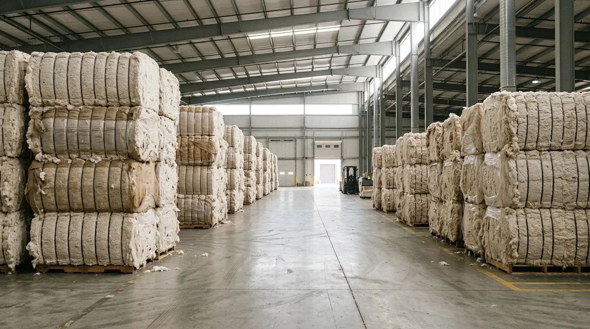
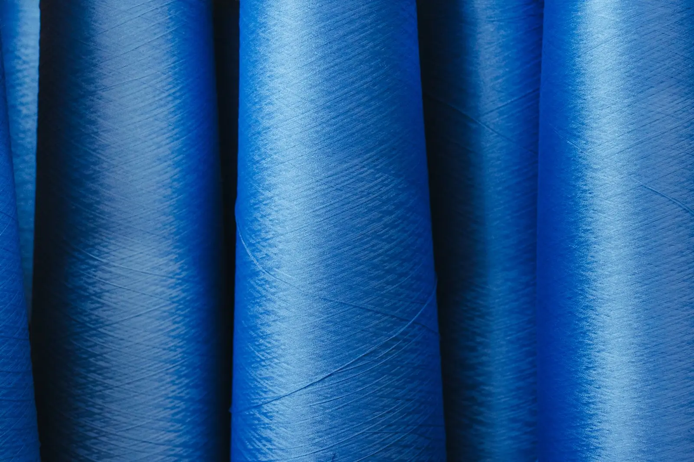

Count
Count is the thickness of the yarn. In Pakistan cotton yarn is usually quoted in English count (Ne): the higher the number, the finer the yarn. Give the exact count you need, for example 20s, 30s or 40s, and say whether it is single or ply.
Service 03 · Yarn traders
All kinds of yarn, and cotton both local and imported, matched to the count you need.

Working with spinning mills every day, we see both ends of the process: the cotton that goes in and the yarn that comes out. We trade both, and match buyers and sellers on the counts and qualities they need.
ہر قسم کا یارن اور مقامی و درآمدی کپاس: کارڈڈ، کومبڈ، کمپیکٹ اور اوپن اینڈ یارن، پی سی اور سی وی سی بلینڈ اور وسکوس۔

Buying guide
Clear specifications get you an accurate offer and the material you actually need.
Count is the thickness of the yarn. In Pakistan cotton yarn is usually quoted in English count (Ne): the higher the number, the finer the yarn. Give the exact count you need, for example 20s, 30s or 40s, and say whether it is single or ply.
Carded yarn is the everyday choice for many fabrics. Combed yarn has the short fibres taken out, so it is cleaner, smoother and stronger and suits finer counts. Compact yarn is spun with an extra condensing zone that cuts hairiness further. Open-end (rotor) yarn is mostly used for coarser counts, in fabrics such as denim and towels.
Say whether you need 100% cotton, polyester, viscose or a blend. PC blends are polyester-rich; CVC (chief value cotton) blends are cotton-rich. Give the blend ratio you need, because two PC yarns of the same count can behave very differently in the fabric.
Weaving and knitting yarns are made differently. Knitting yarn usually has less twist for a softer fabric and is often waxed; weaving yarn needs more twist for strength on the loom. Tell the seller the end use and the packing you want, usually cones.
For an important order, look at a yarn test report: count variation, strength, evenness (U% or CVm), imperfections (thin and thick places and neps) and hairiness.
When buying cotton the main points are staple length, micronaire (fineness), strength, trash content and moisture. Local and imported cotton differ in these, and the right choice depends on the count and quality you want to spin. We trade both, as lint and in bales.
Tell the seller the quantity, the city it has to reach and when you need it. Freight and delivery are worked out around these three, so an enquiry that includes them gets a clearer answer, faster.
For a large order, ask whether it comes from a single lot. Yarn from different lots, even of the same count and type, can differ slightly in shade after dyeing, which matters for fabric that will be dyed or cut together. For slub and fancy yarns, a sample or a photo of the fabric is the clearest way to describe what you need.
Yarn in all counts. Tell us the count, type, blend and quantity you need and we will tell you what we can arrange.
Carded and combed cotton yarn, compact and open-end yarn, polyester, PC and CVC blends, viscose, and slub and fancy yarn.
Yes. We trade both local and imported cotton, as lint and in bales, depending on what the client needs.
Minimum order, delivery and freight depend on your requirement. Send us the details on WhatsApp at 0332-4681423 and we will work out a solution.
WhatsApp or call 0332-4681423 with the count, type, blend, quantity and the city it needs to reach.
Tell us what you need. We answer on call and WhatsApp, and godown visits are by appointment.
